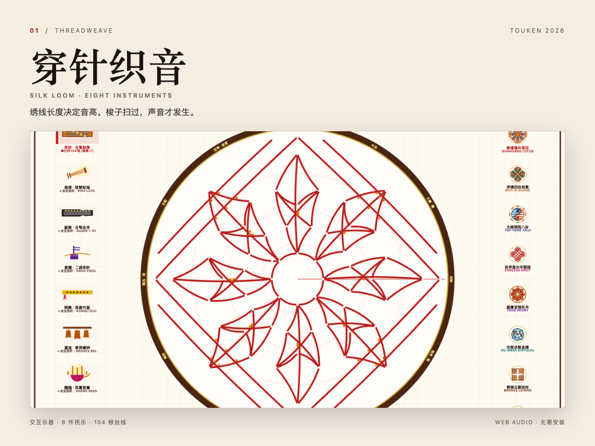
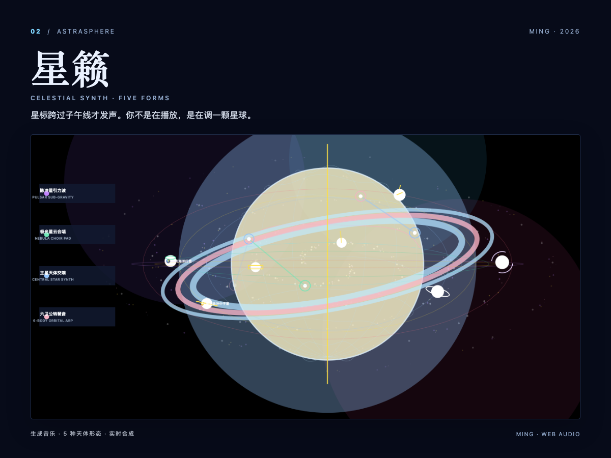
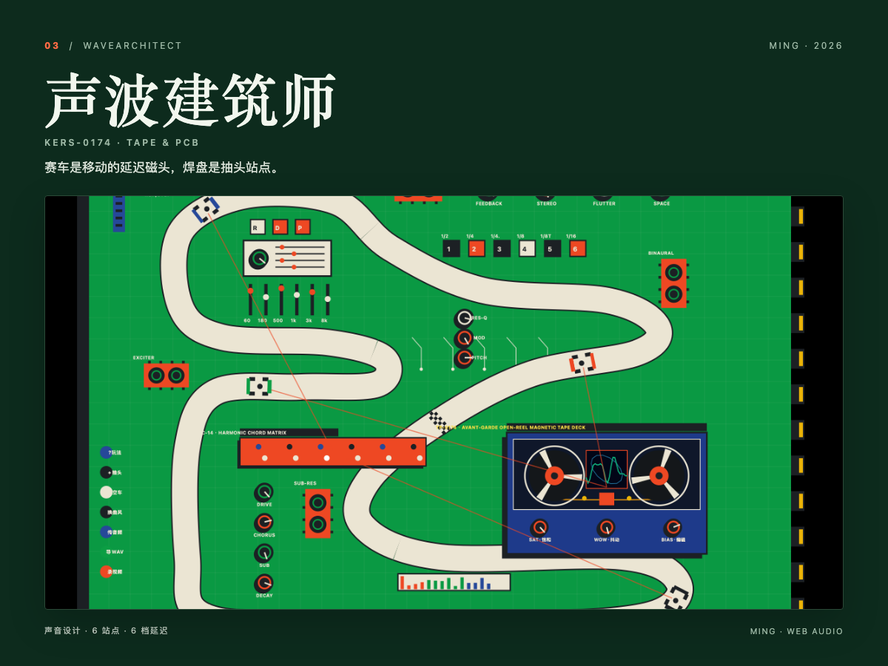
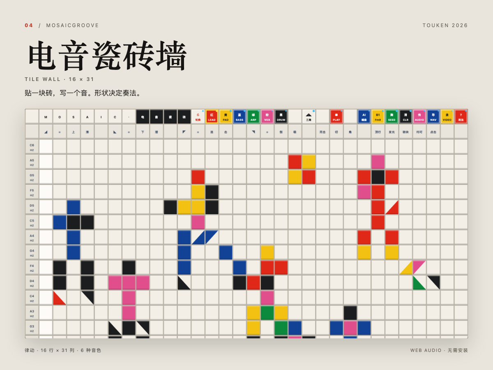

MING · FOUR INTERACTIVE AUDIO WORKS
把声音，
做成可以摸到的东西。
四件在浏览器里直接运行的交互式声音作品。没有安装、没有宿主、没有授权框： 点开就能听见，拖动就会变化。所有声音由 Web Audio 实时合成， 画面上的每一条线、每一块砖、每一颗星，都直接对应一个声音决定。
四件作品
01 / THREADWEAVE

打开作品 →穿针织音THREADWEAVE · SILK LOOM
把绣绷当乐器：丝线越长，音越低；梭子扫过哪根线，哪根线就发声；线离圆心越近，奏法越绵长。八种民乐音色、八种非遗纹样，构成一台可以“绣”出音乐的织机。也可以上传任意一张图，让图片变成丝线，被竹梭演奏出来。
点击丝线 / 启动竹梭约 2 分钟上手
02 / ASTRASPHERE

打开作品 →星籁ASTRASPHERE · CELESTIAL SYNTH
星体自转，星标跨过中央子午线才触发声音；纬度决定音高，轨道半径决定快慢。你不是在按播放键，而是在调整一个星系，听它自己运转。
点击球面 / 拖拽星球约 1 分钟上手
03 / WAVEARCHITECT

打开作品 →声波建筑师WAVEARCHITECT · KERS-0174
一块会跑的电路板。赛道上的每辆赛车都是一个移动的延迟读取磁头，经过焊盘站点时触发对应音程；档位改变磁头速度，IC 针脚按半音移调，右下角开盘机负责饱和、抖动与偏磁。
点击赛车 / 旋钮 / 磁带盘约 2 分钟上手
04 / MOSAICGROOVE

打开作品 →电音瓷砖墙MOSAICGROOVE · TILE WALL
在墙上贴瓷砖，就是写一段 beat。行决定音高，列决定时间，颜色决定乐器，砖的形状决定奏法：整块是延音，三角是滑音、连击或五度和声。双击切开一块砖，声音就换了。底部工具栏可撤销、改 BPM、保存工程，并导出 MIDI 与 8 秒 WAV。
点击 / 双击瓷砖约 30 秒上手
怎么玩：60 秒就够
01 · 打开点任意一张卡片。页面会在本地加载，不需要联网，也不需要安装任何东西。
02 · 开始点一次“开始”按钮解锁浏览器音频，然后直接用鼠标点、拖、画。没有隐藏的播放键。
03 · 听变化每个画面元素都对应一个声音参数。先乱点 10 秒，再找一条你喜欢的路径，重复它。
技术说明（不修饰）
声音Web Audio API 实时合成：振荡器、滤波、延迟、混响与程序化包络。没有采样库，也没有预渲染的成品音轨。
画面Canvas / SVG 实时绘制，跟随音频时钟；不是视频，也不是逐帧图片序列。界面与声音共用同一套参数。
边界这是四件浏览器作品，不是 VST3/AU 插件，不能在 DAW 里加载；单页运行，不保存工程，刷新即重置。
制作方式：与 AI 结对编程完成。界面、交互与声音引擎由代码生成；部分作品内置可编辑的示例图案，方便第一次打开时就有声音。所有演示素材均来自作品本身的实时输出，未使用第三方采样或预制 Loop。